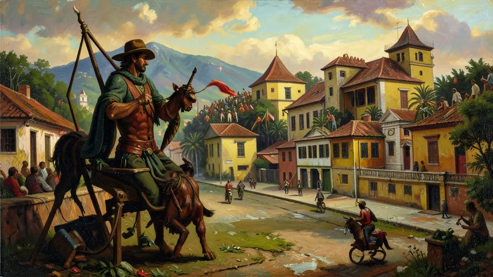
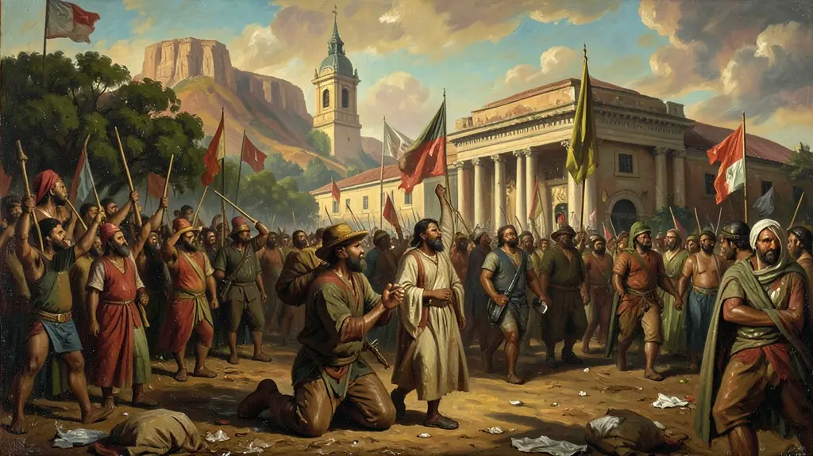
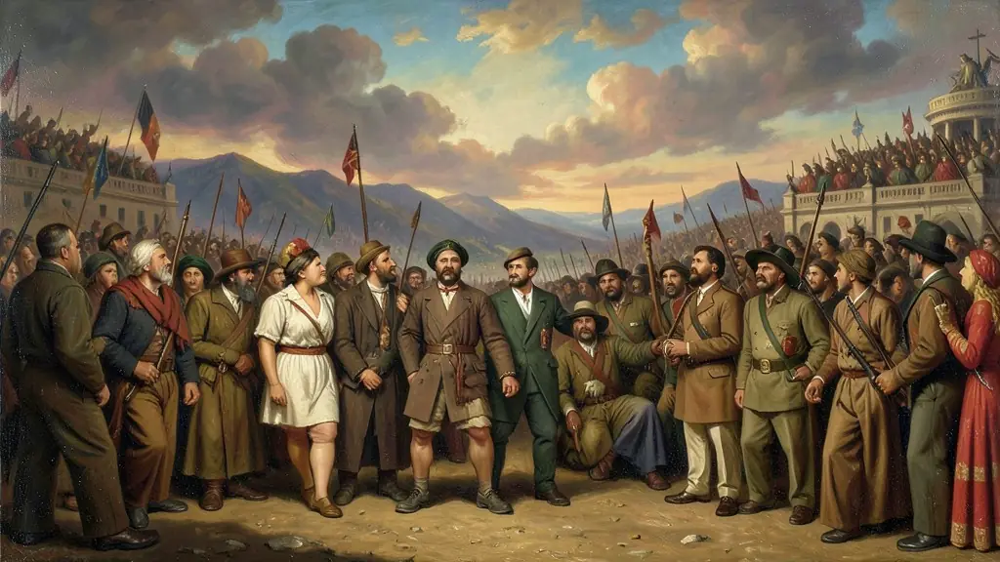

Capítulo 01
1. O Interventor 'Forasteiro' e a Fúria Paulista
Para humilhar São Paulo após 1930, Vargas nomeou o coronel João Alberto (pernambucano) como interventor do estado. Para os barões do café e os industriais de SP, isso era um insulto inaceitável. Eles exigiam um interventor paulista e civil. O ódio ao centralismo de Vargas crescia nas universidades e nos clubes de elite, fervendo até o derramamento de sangue.

Capítulo 02
2. MMDC: O Sangue que Batizou a Revolução
Em 23 de maio de 1932, uma multidão tentou invadir uma sede do governo em SP. A polícia fuzilou quatro estudantes: Martins, Miragaia, Dráusio e Camargo. Suas iniciais (MMDC) viraram a sigla de uma organização secreta armada. A partir dali, a revolta não era mais apenas política; era uma questão de honra paulista para vingar seus jovens mortos pela ditadura de Vargas.

Capítulo 03
3. O 9 de Julho e os Voluntários da Pátria
A mobilização santista e paulistana foi total. Mulheres doavam joias ('Ouro para o bem de São Paulo') e homens de todas as classes alistavam-se para lutar nas trincheiras contra o resto do Brasil. Como o exército nacional estava com Vargas, os paulistas tiveram que improvisar: criaram tanques com tratores e transformaram fábricas em indústrias de munição. Foi o maior esforço de guerra interna do Brasil.

Capítulo 04
4. O Isolamento Militar e a Rendição
A estratégia paulista dependia de revoltas simultâneas em Minas e no Rio Grande do Sul. Mas Vargas comprou as elites desses estados com promessas de poder. São Paulo ficou sozinha. A Marinha brasileira bloqueou o Porto de Santos, cortando toda a comida e combustível. Em outubro, vendo que a resistência levaria ao massacre de civis, os generais de SP assinaram a rendição honrosa.
Capítulo 05
5. A Constituição de 1934: A Vitória Adiada
Vargas percebeu que silenciar São Paulo pela força não resolveria o problema do Brasil. Para pacificar o país, ele cedeu à principal exigência paulista: uma nova Constituição. A carta de 1934 foi avançadíssima, trazendo o voto secreto, o voto feminino e a criação da Justiça do Trabalho. São Paulo provou que, mesmo perdendo a guerra, era impossível governar o Brasil ignorando a força da lei.
A Revolução Constitucionalista de 1932 foi o esforço da oligarquia decadente paulista e de vastos setores da classe média intelectualizada do PRP para resgatar o protagonismo político perdido após a Revolução Varguista de 1930. Demandavam uma nova Constituição, o fim dos interventores militares federais e a restauração da autonomia administrativa do estado de São Paulo.
Valendo-se da mobilização de milhares de universitários civis engajados ideologicamente à bandeira MMDC e utilizando-se fortemente do ufanismo belicista anti-centralista frente à nação, iniciaram as batalhas armadas isoladamente sendo subsequentemente massacrados logisticamente pelo amplo poderio militar ditatorial dos exércitos apoiadores de Getúlio Vargas.
O legado de '32 e sua incidência didática (recorrente no Enem) expõem que seu término trouxe a consolidação hegemônica getulista. De modo paradoxal contudo, obteve sucesso institucional político indireto – Vargas vitoriosamente esmagou os rebeldes militares, no entanto, para não fustigar permanentemente o poderoso empresariado bandeirante, promulgou concomitantemente as regras eleitorais consagradas nacionalmente à Assembleia de 1934.
Fonte: FAUSTO, Boris. A Revolução de 1930: Historiografia e História. Brasiliense, 1997.
Atividades interativas
Questões para fixar
A sigla MMDC tornou-se o símbolo da Revolução Constitucionalista de 1932. O que ela representava?
Embora derrotada militarmente, São Paulo obteve uma conquista política fundamental após a revolução de 1932. Qual foi ela?
Qual foi o evento que desencadeou a Revolta Constitucionalista de 1932 em São Paulo?
Qual foi o resultado da Revolta Constitucionalista de 1932 em termos de governança do país?
Qual foi a estratégia de Getúlio Vargas após a derrota militar de São Paulo em 1932?